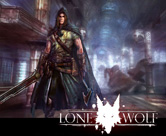
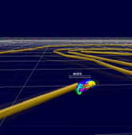
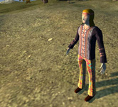

Projects
More or less active projects
Loomo (2009, 2012)
Loomo is an open-source filebrowser extension for Mozilla Firefox hosted on github.
Projects from the good old times

LoneWolf / kjAPI (2008 - 2009)
In September 2008, I started working as an intern at the independent Singaporean game developer Ksatria Gameworks.
At the time being, I have been working on Ksatria’s current project LoneWolf and kjAPI, the engine it is based on.

CurveRider (2007 - 2008)
CurveRider is quite a different 3D-clone of the famous Tron LightCycles subgame, developed by my friend and collegue Rainer and me. As we wanted to create a special gaming-experience, it is different from the original and all the other clones. Instead of only being able to drive in a straight line and turn by 90 degrees, the player can smoothly turn as in normal racing-games, resulting in smooth curves or “walls”.

Paradise Glossed (2007 - 2008)
Paradise Glossed is a real time strategy game and chooses as a central theme - in a satirical manner - the conflict between two ideologies.